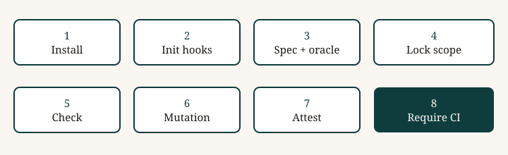

Tutorial
This walkthrough uses a small Python change. The same commands work on Windows PowerShell and on a Unix shell. Run them from the root of the repository you want to protect.

1. Install
go install github.com/vaquarkhan/ProofSieve/cmd/proofsieve@latest proofsieve version
You should see proofsieve 1.0.0. Git must be on PATH. ProofSieve never invokes a shell to run git.
2. Initialize the repository
proofsieve init
This writes .proofsieve/policy.yaml, .cursor/hooks.json, and .claude/settings.json when those files are absent. It appends .proofsieve/run/ to .gitignore. Existing files are left in place.
Put proofsieve on the PATH the editor uses. Cursor calls proofsieve guard before Write, Delete, and Shell. Claude Code calls it before Edit, Write, and Bash. Exit 0 allows the call. Exit 2 denies it. Any other failure also denies, so a broken lock cannot fail open.
3. Write the spec and the oracle
A human writes the requirement and the test. The agent does not. Example spec specs/price.md:
REQ-1 Half-up rounding applies to the listed unit price before tax.
Example oracle billing/oracle/test_price.py:
def test_price():
assert price(1.005) == 1.01
4. Lock the scope
proofsieve lock --spec specs/price.md --allow billing/** --lock-glob billing/oracle/** --owner your-github-login
The lock allows billing/**, denies .proofsieve/**, and stores the SHA-256 of every file matched by the lock glob. Later edits of those tests fail CI. The hook denies every write under .proofsieve even when an allow glob would match it.
Commit the spec, the oracle, the policy, and the lock. That commit is the base.
5. Check a change
proofsieve check --base origin/main
The default format is Markdown. Use --format json or --format sarif for machines. --gate can be all, scope, complexity, mutation, review, or ownership.
6. Turn on mutation
In .proofsieve/policy.yaml set mutation_gate.enabled to true and set test_command to the argv of your test runner, without a shell. Example: ["python", "-m", "pytest", "-q"]. ProofSieve copies the tree, applies one mutant at a time on the changed lines, and runs that command. A kill rate below min_tier1_kill_rate_pct (default 80) fails the check. An empty test_command is an infrastructure error.
7. Attest a high-risk change
Enable comprehension_gate. When the risk score reaches the threshold, CI requires a comment on the pull request:
proofsieve attest --sha HEADSHA --spec REQ-1 --invariant "unit price still rounds half up" --failure "revert the pricing commit" --test test_price
Paste the output as a comment from a human account. Names containing [bot] cannot unlock the gate. Verify locally with:
proofsieve attest verify --file comment.txt --sha HEADSHA --spec-file specs/price.md --author your-login
8. Require the check
Add the workflow in CI and mark the job as a required status check. A green local hook is not a merge approval.